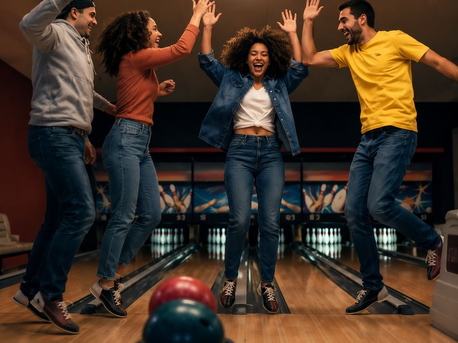
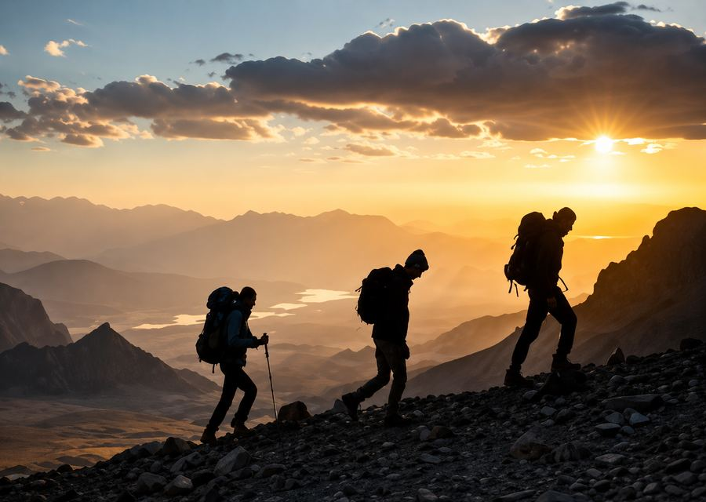
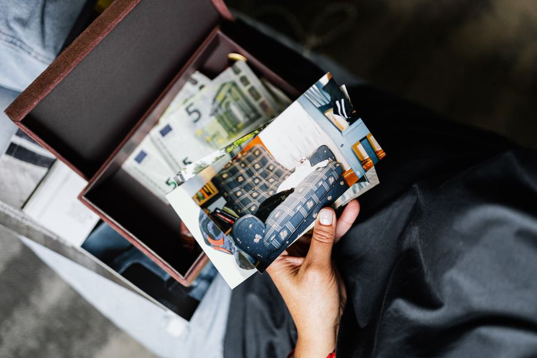

Aptis Speaking
Part 1: In this part, I am going to ask you three short questions about yourself and your interests. You will have 30 seconds to reply to each question.
1. Tell me about the last time you went to the cinema.
=> Last month, I went to the cinema with my friends. We watched an action movie and had a great time. The movie was really thrilling, and we bought popcorn to share. I still remember how much we laughed together that night.
2. What kind of movies do you like to watch?
=> I like watching action movies because they are exciting and interesting. My favorite actor is in a lot of these movies, so I always look forward to his films. Watching them also helps me relax after a long week.
3. Please tell me about a member of your family.
=> My mother is very kind and hardworking. She always takes care of my family. She wakes up early every day to cook breakfast for us. I feel very lucky to have her as my mother.
Part 2: In this part, I'm going to ask you to describe a picture. Then I will ask you two questions about it. You will have 45 seconds for each response.
1. Describe the picture => In this picture, I can see some people. I think they co-workers. They are working in an office. Some people are sitting at the table and some are standing. They are wearing formal clothes and look happy. The environment is friendly. On the table I can see some laptops and behind them I can see a white board. I like this picture because they look professional |
2. Why do people like working in a team?
=> People like working in a team because it is more interesting and effective. They can share ideas and help each other. They can also finish their work faster. For example, when one person has a problem, the others can give advice quickly. This makes the work less stressful for everyone.
3. Please talk about a time you worked in a team.
=> Last month, I worked on a school project with my classmates.
We helped each other and finished it on time. Everyone gave good ideas, so the project looked great. I felt proud when our teacher praised our work.
Part 3: In this part, I'm going to ask you to compare two pictures, and I will then ask you two questions about them. You will have 45 seconds for each response.
1. Tell me what you can see in these two pictures.
 |
 |
=> The two pictures show people enjoying different activities.
There are some differences between the two pictures. Picture 1 shows a group of friends playing bowling while picture 2 shows some people climbing a mountain.
The people in picture 1 are playing indoors and the people in picture 2 are outdoors. There are some similarities between the two pictures.
The people in both pictures are having fun together. Both activities look enjoyable and help people stay active. I think trying new activities like these can make life more interesting.
2. Do you prefer spending your free time indoors or outdoors?
=> I prefer spending my free time outdoors because I enjoy fresh air and beautiful scenery. For example, I like walking in the park near my house every weekend. It helps me feel relaxed after a busy week.
3. What are the disadvantages of outdoor activities compared to indoor ones?
=> Outdoor activities depend on the weather. They can also be more tiring and sometimes dangerous. For instance, if it rains suddenly, people may get wet and have to stop. Sometimes people can also get hurt if they are not careful.
Part 4: Part 4: In this part, I'm going to show you a picture and ask you three questions. You will have 1 minute to think about your answers before you start speaking. You will have 2 minutes to answer all three questions.

Tell me about a time when you had possession of something valuable?
Why was this possession important to you and how did you feel when you had it?
Why do you think people should share their possessions with others?
=> Regarding the first question, today I'm going to talk about a time when I had something valuable. Last year, my parents gave me a new laptop. I used it for studying and doing my work every day. I always keep it in a safe bag to protect it. It was the most useful gift I have ever received.
Turning to the second question, it was important to me because it helped me study better. I felt very happy and thankful when I received it. I promised myself to take good care of it every day.
About the last question, I think people should share their possessions with others because it can help people in need. Sharing also makes people kinder and happier. It also helps build a stronger community where everyone supports each other.